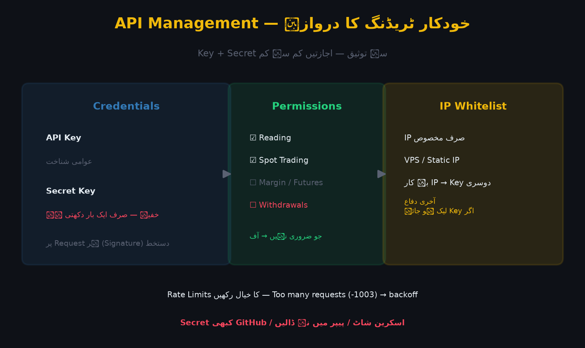

API (Application Programming Interface) ایک پروگراماتی دروازہ ہے جس کے ذریعے آپ کا کوڈ (یا تھرڈ پارٹی ٹول) براہِ راست بائننس سے بات کر سکتا ہے — آرڈر لگانا، بیلنس دیکھنا، مارکیٹ ڈیٹا لانا۔ یہ طاقتور ہے، مگر ایک غلطی مہنگی ہو سکتی ہے، کیونکہ API Key سے خودکار آرڈرز چلتے ہیں۔

تصویر 56.1: API Management کا خاکہ — API Key/Secret، اجازتیں (Read/Spot Trading/Futures)، اور IP Whitelist کا تحفّظی پہلو۔
🎯 اس باب میں آپ سیکھیں گے
API کیا ہے اور کس کے لیے استعمال ہوتا ہے
API Key اور Secret Key کا فرق
اجازتوں (Permissions) کی اہمیت
IP Whitelist کا تحفّظ
Rate Limits اور عام API غلطیاں
API Key بند (Revoke) کرنا اور حفاظتی اصول
📖 56.1 API کیسے کام کرتا ہے؟
آپ کا کوڈ/بوٹ → API Key + Secret (دستخطی توثیق) → بائننس سرور
↑
read / trade / (withdraw آف)
API Key: عوامی شناخت (Public ID) — لاگ/شناخت کے لیے۔
Secret Key: خفیہ چابی — صرف ایک بار دکھائی جاتی ہے؛ یہی دستخط بناتی ہے۔
ہر Request پر دستخط (Signature) لگتا ہے، اسی لیے Secret ہرگز شیئر نہ کریں۔
اصول: جو اجازت ضروری نہ ہو، آف رکھیں۔ Withdrawals API کے لیے عموماً آن نہ کریں — اگر Key لیک ہو تو صرف ٹریڈ کرے گا، فنڈز نکال نہیں سکے گا۔
📖 56.3 IP Whitelist — سب سے اہم تحفّظ
API پر صرف مخصوص IP پتے شامل کریں:
Server IP (VPS) یا اپنا اسٹیٹک IP
→ دوسرے کسی IP سے Key کام نہیں کرے گی
اگر آپ کا IP غیر مستحکم (Dynamic) ہے تو VPS استعمال کریں۔
Whitelist کے بغیر Key کہیں سے بھی استعمال ہو سکتی ہے — خطرہ بہت زیادہ۔
کلید لیک ہو جائے تو Whitelist آخری دفاع ہے۔
📖 56.4 Rate Limits اور عام غلطیاں
بائننس API کی حدود:
- Request Weight per minute
- Order rate limits
- Error codes: -1003 (Too many requests)، -1021 (Timestamp)
بہت تیز لوپ = IP بین (عارضی)
Server Time سے گھڑی میلی: timestamp درست رکھیں (NTP)
429/418 کا مطلب Rate limit — backoff کے ساتھ دوبارہ کوشش
📖 56.5 حفاظتی اصول
✅ Secret Key صرف ایک مرتبہ — فائل/میپ ورژن میں محفوظ کریں
✅ Withdrawals اجازت آف
✅ IP Whitelist لازمی
✅ الگ API Key ہر بوٹ/حکمت عملی کے لیے
✅ غیر استعمال شدہ Key فوراً Delete
✅ کلید کبھی GitHub/پیپر/اسکرین شاٹ میں نہ ڈالیں
✅ رجسٹرڈ ای میل/2FA محفوظ رکھیں
⚠️ عام غلطیاں
❌ API پر Withdrawals آن کرنا — ایک لیک = سب ختم۔
❌ Secret Key شیئر/کاپی کرنا۔
❌ IP Whitelist نہ لگانا۔
❌ ایک ہی Key سب بوٹس کے لیے — الگ رکھیں۔
❌ Rate limit نہ سمجھنا — IP بین۔
❌ Timestamp Error کو نظر انداز کرنا۔
❌ غیر مصدقہ GitHub/تھرڈ پارٹی ٹول کو Key دینا۔
✅ خلاصہ
API = خودکار ٹریڈنگ/ڈیٹا کا دروازہ؛ Key + Secret سے توثیق۔
اجازتیں کم سے کم؛ Withdrawals عموماً آف۔
IP Whitelist لازمی؛ ہر بوٹ کا الگ Key۔
Rate Limits اور Time Sync کا خیال رکھیں۔
کلید کبھی عوامی ذریعے میں نہ رکھیں۔
📝 عملی مشق
API Management کھولیں اور اجازتوں کے چار ٹک دیکھیں (Key ابھی نہ بنائیں)۔
لکھیں: API Key اور Secret Key کا فرق۔
ایک "Minimum Access" Key کی منصوبہ بندی لکھیں (کس بوٹ کو کتنی اجازت)۔
IP Whitelist کی اہمیت پر 3 جملے لکھیں۔
اگر کوئی پرانی Key ہو تو اسے Delete/Revoke کریں۔
🧠 یاد رکھیں
"API طاقت دیتا ہے — پر اجازتیں کم سے کم رکھیں، Whitelist لازمی۔" اصول: (1) Withdrawals آف، (2) IP Whitelist، (3) Secret کبھی عوامی نہیں۔